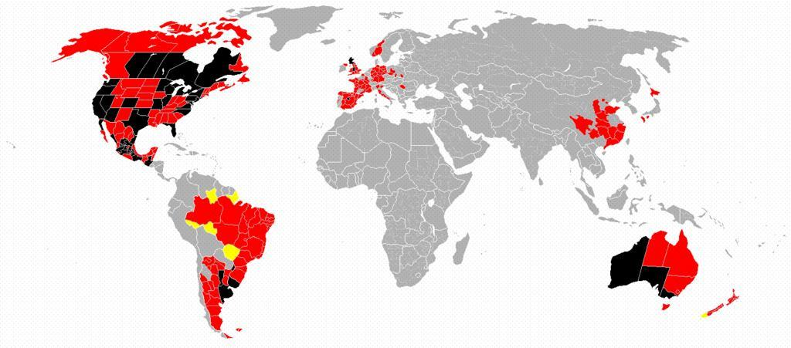

My Story
I’m William Penprase III, an aspiring data scientist and software developer with a strong foundation in utility arboriculture
and a growing portfolio in analytics and computer science. My journey into programming began on January 13, 2024, and culminated on
June 18, 2025, with the completion of my B.S. in Computer Science from Western Governors University.
With nearly 7 years in utility vegetation management and dual degrees in Computer Science and Botany (Cal Poly Humboldt), I
bring a unique blend of environmental insight and technical precision. My certifications, including ISA Utility Specialist,
TRAQ, ITIL 4, and Linux Essentials, reflect a commitment to both industry depth and technical excellence.
Currently, I work as a Quality Control Specialist for PG&E, auditing inspections across Distribution, Transmission, and
Pole Clearing programs. I regularly use tools like Excel, Power BI, and ArcGIS to assess risk, interpret trends, and support public
safety through data-driven decision-making.
As I transition into a career in data science and software development, I focus on clarity, reproducibility, and impact—translating
complex field data into meaningful insights that support smarter decisions across industries.
Built a custom package delivery system using hash tables, distance matrices, and address indexing to simulate real-time routing for WGUPS.
Integrated CSV data, updated package statuses dynamically, and tracked truck mileage and delivery times. Demonstrated algorithmic thinking,
data structure design, and operational modeling in Python.
Built a student roster tool in C++ to parse, validate, and manage academic records. Features include email verification,
average course duration calculation, and dynamic record removal using object-oriented design.
Python - Jupyter Notebook
Built a predictive model using logistic regression and SVM to recommend optimal crops based on soil nutrients,
climate, and pH. Explored data distributions with Seaborn, validated model accuracy (96–97%), and deployed an
interactive widget interface for real-time crop prediction. Combines data science, visualization, and user interactivity.
Built a backend application using Spring Boot, MySQL, and RESTful architecture in a WGU lab environment. Initialized the project with
Spring Data JPA, Lombok, and MySQL Driver dependencies. Structured the codebase into modular packages—controllers, entities, DAO, services,
and config—aligned with UML specifications. Implemented entity classes, enums, and repository interfaces with cross-origin support.
Added service-layer logic and input validation for seamless integration with an Angular front-end. Managed version control through
a private GitLab repository and ensured compatibility for local development.

Cleaned the Nashville Housing dataset by standardizing dates,
filling missing addresses, splitting composite fields, removing duplicates,
and dropping unnecessary columns for streamlined analysis.
Imported a COVID-19 dataset into SQL Server, cleaned and aggregated the data,
and used SQL queries to analyze pandemic trends and prepare insights for visualization.
Imported a layoffs dataset into SQL Server, cleaned and standardized the data, removed duplicates,
and performed exploratory analysis to uncover trends by company, industry, and time.
Performed correlation analysis on a cleaned movie dataset using Pandas and Seaborn.
Encoded categorical features, visualized relationships with pair plots and heatmaps,
and identified strong associations between budget, votes, and gross revenue.

Designed an interactive COVID-19 dashboard in Tableau Public to visualize global cases, deaths, and infection rates by continent and country.
Included time-series analysis and geospatial mapping to highlight pandemic trends through March 2021.
Built normalized schemas and populated data for library, employee,
and environmental systems. Wrote analytical queries and views to
uncover trends in borrowing, demographics, and genre popularity.
Created relational schemas for user-photo logging and employee management. Used foreign keys,
constraints, and sample data to model real-world relationships. Wrote queries to join tables,
extract insights, and validate data integrity.
Developed an interactive console-based quiz application in Java that tests users on U.S. state capitals. Utilized
a 2D array to store state-capital pairs, implemented bubble sort to organize data by capital, and used HashMap
and TreeMap for efficient lookup and sorted display. Included randomized question order, input validation, and
a query feature for retrieving capitals by state. Demonstrates core Java skills in data structures, control flow, and user interaction.